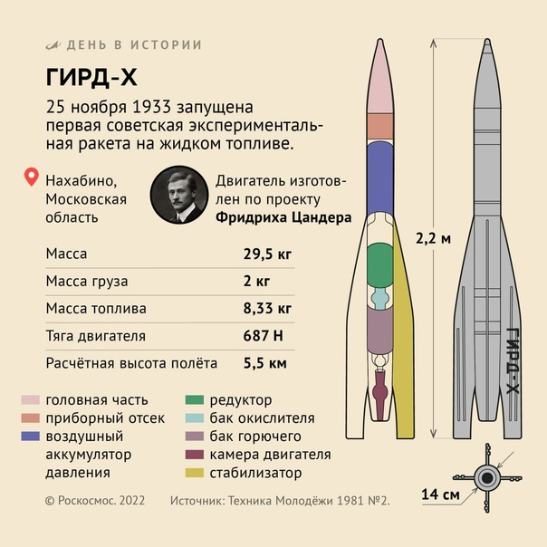
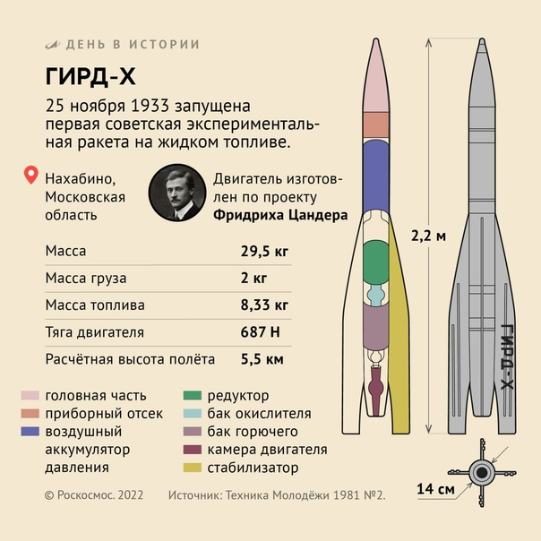

Первая ракета
Музей истории ГИРД
Нахабинская СОШ №2

Музей истории ГИРД
Нахабинская СОШ №2
"Напишите историю ГИРДа, ведь космодром начинается с Нахабино», - так сказал космонавт Герман Титов учащимся Нахабинской школы №2, побывавший в гостях у школы в 1963 году. Герман Степанович много и с удовольствием рассказывал о своем полете, о полученных впечатлениях, о тех людях, которые создавали космические корабли и готовили космонавтов к полету. Герман Степанович посоветовал ребятам заняться изучением истории ГИРД (группа изучения реактивного движения), которая стояла у истоков создания ракет на жидком топливе. Ученики выполнили наказ космонавта. С большим трудом собирали школьники материалы и экспонаты для музея. По просьбе профессора М.К.Тихонравова Академией наук СССР были переданы музею на хранение модели первых ракет на жидком топливе «ГИРД- 09» и «ГИРД-Х». Был избран совет музея, который определил разделы музея и организовал работу по подготовке для них экспонатов и экскурсоводов. У истоков создания музея стояла учительница Нахабинской школы №2 Власенко Евгения Александровна. В настоящее время работой музея руководит заведующая библиотекой школы Елена Тихоновна Запенцовская.

 
